Cuprins
- Autori
- 1. Introducere
- 2. Descriere Generală
- 3. Interfețele aplicației
- 4. Caracteristici ale sistemului
- 5.Funcționalități pentru protecție și securitate
- 6.Structura aplicației
- 7.Echipa
1. Introducere
1.1 Scop
SoRe (Souvenir Web Recommender) este o aplicație web dezvoltată de studenții de la Facultatea de Informatică a Universității Alexandru Ioan Cuza. Scopul acestui document este de a prezenta o descriere detaliată a funcționalităților aplicației, specificațiile tehnice și cerințele necesare. Aplicația permite utilizatorilor să găsească suveniruri potrivite din diferite țări și să primească recomandări personalizate în funcție de cultura locală, obiceiuri, perioada vizitei și vârsta persoanelor.
1.2 Convenția documentului
- Acest document urmează șablonul de documentație a cerințelor software conform IEEE Software Requirements Specification.
- Textul îngroșat este folosit pentru a defini noțiuni personalizate sau pentru a accentua concepte importante.
1.3 Publicul țintă
Documentul este destinat profesorilor, studenților, dezvoltatorilor și oricăror utilizatori interesați de funcționalitățile aplicației.
1.4 Bibliografie
- Vlad Victor, Site-ul Tehnologii Web, FII UAIC
2. Descriere Generală
2.1 Perspectiva produsului
SoRe este o aplicație web menită să ofere utilizatorilor posibilitatea de a gestiona și de a primi recomandări personalizate pentru suveniruri în funcție de țările vizitate.
2.2 Funcționalitățile produsului
- Înregistrare cont
- Autentificare
- Resetare parolă
- Consultare pagină Home și selecție suveniruri
- Accesare pagină Category pentru explorare suveniruri
- Accesare pagină Virtual Map pentru descoperirea punctelor de interes
- Accesare pagină Despre și Ajutor din footer
- Accesa pagina "Ajutor" pentru a beneficia de sfaturi în vederea utilizării aplicației. (calea către această pagină se gasește in footer)
- Gestionare informații personale în pagina Profil
- Informații despre contact și link-uri utile în footer
2.3 Clase și caracteristici ale utilizatorilor
2.3.1 Utilizator principal
- utilizatorii autentificați pot fi:
-
- o categorie largă de persoane interesate de achiziționarea și colectarea de suveniruri din călătorii.
-
utilizatorii neautentificați pot fi:
- călători care doresc recomandări personalizate pentru suveniruri în funcție de destinație și preferințe.
2.3.2 Caracteristici
- Utilizatorii autentificați pot accesa toate funcționalitățile aplicației, inclusiv gestionarea preferințelor.
- Utilizatorii neautentificați pot căuta și vizualiza suveniruri, dar nu pot accesa funcționalitățile care necesită autentificare.
2.4 Mediul de operare
Aplicația funcționează pe orice dispozitiv cu un browser web modern (HTML5, CSS).
2.5 Documentația pentru utilizator
Acest document oferă informații despre funcționalitățile și caracteristicile aplicației.
3. Interfețele aplicației
3.1 Interfața utilizatorului
Mai jos, puteți vedea o prezentare generală a fiecărei pagini a aplicației și funcționalităților pe care le oferă:-
- Aceasta reprezintă meniul de navigare către anumite pagini a aplicației (Home, Virtual Map, Category, Login, Sign Up).
- 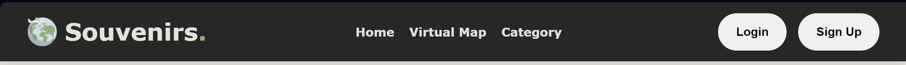
-
- Acesta reprezintă footer-ul în care se găsesc anumite date de contact și link-uri utile către pagina About Us și Help.
- 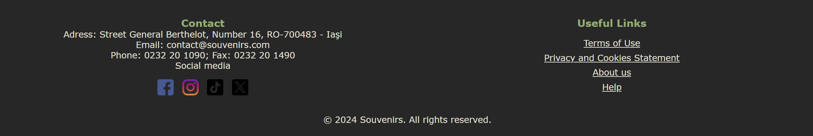
- Pagina de autentificare
-
- Pagina are rolul de a realiza autentificarea utilizatorilor.
- Pentru a se autentifica, utilizatorul trebuie să completeze câmpurile de "username" și "password" cu credențiale valide, urmând să acționeze butonul Login.
- 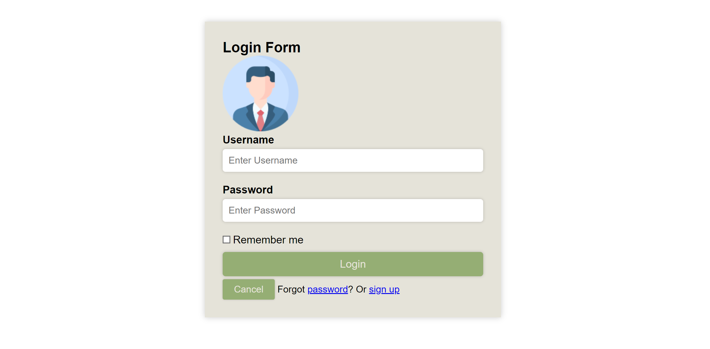
- În cazul în care utilizatorul nu are cont pe site, acesta își poate crea unul prin accesarea pagini de înregistrare(Sign Up), ce se face prin selectarea Sign Up.
- În cazul în care utilizatorul și-a uitat parola, acesta poate să o reseteze selectând opțiunea de Forgot password?
- 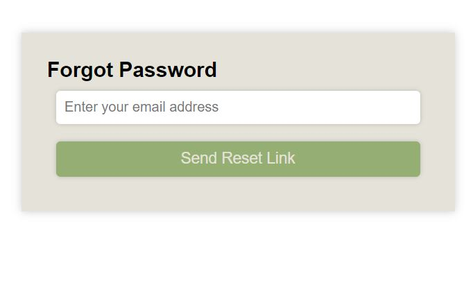
- După ce adresa de email a fost introdusă, aplicatia va verifica in baza de date dacă există această adresă. Dacă există, atunci utilizatorul care a uitat parola va primi un email cu un link unic:
- 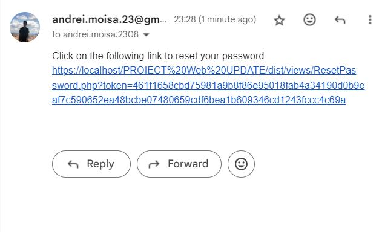
- Acest link unic îl va duce spre pagina de resetare a parolei:
- 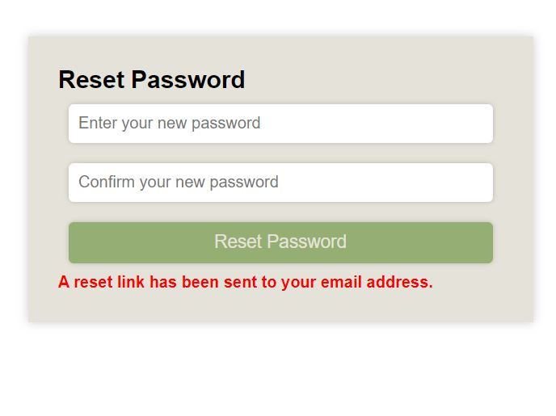
- Pagina de înregistrare
-
- Pagina oferă funcționalitatea de înregistrare a utilizatorilor, pentru a putea beneficia de toate funcționalitățile site-ului Souvenirs.
- Pentru a se înregistra, utilizatorul trebuie să completeze câmpurile "username" ,"email", "password", "repeat password". Mai mult, câmpurile Email și Username trebuie să fie unice.
- Înregistrarea se face prin apăsarea butonului Sign Up.
- 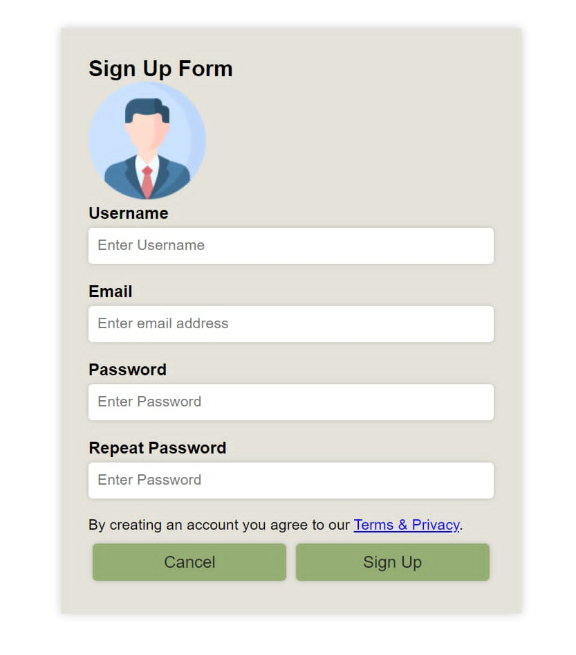
- Pagina informativa
-
- Pagina are rolul de a introduce site-ul Souvenirs pe scurt, prin menționarea unor mici detalii: numele autorilor și scopul aplicației.
- Exită și un buton help, cu ajutorul căruia clientul poate fi direcționat direct către pagina Help
- 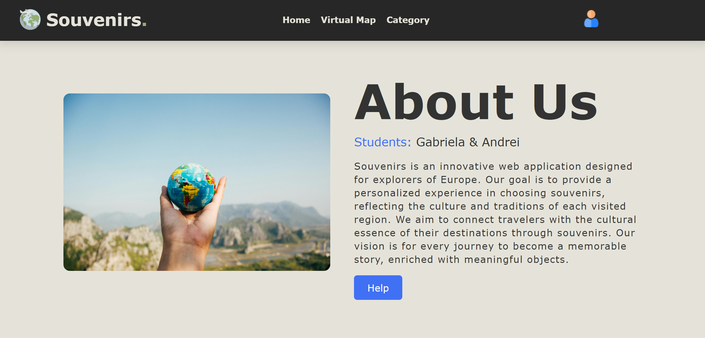
- Pagina de ajutor
-
- Pagina are rolul de a prezenta câteva sfaturi pentru a putea beneficia de o experienta completa pe site.
- 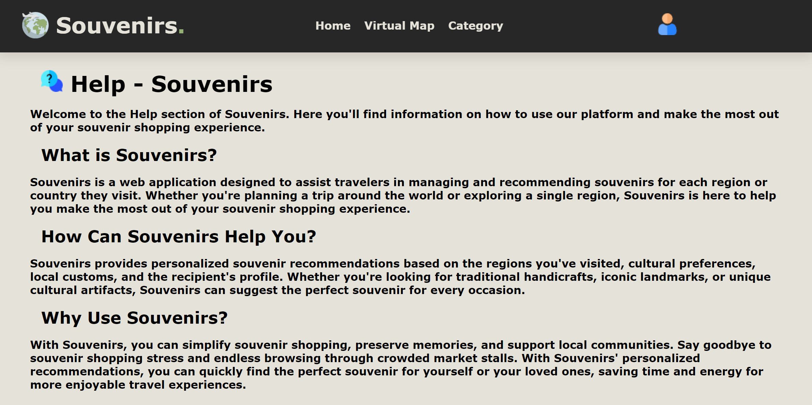
- Pagina Home
-
- Pagina are rolul de căuta prin selectarea filtrelor suvenirul potrivit.
- 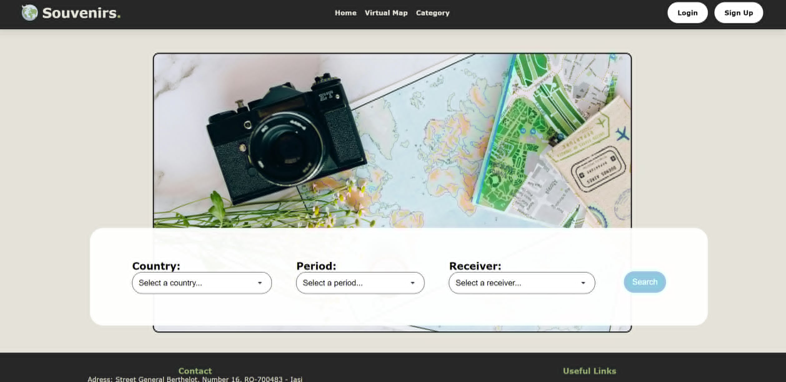
- În primul filtru poate să scrie locația în care este/dorește să meargă. (opțiuniile fiind doar România,Italia,Spania,Franța și Germania)
- Al doilea filtru este destinat pentru a selecta perioada în care este/dorește să meargă: iarna, primăvara, vara sau toamna.
- Al treilea filtru este pentru a selecta categoria de vârstă a persoanei căreia dorește să-i facă cadou un suvenir. (opțiunile fiind de: copil, adolescent, adult si vârstnic)
- În urma selectarii filtrelor (nu este obligatoriu să fie toate filtrele selectate), utilizatorul va fi direcționat către pagina de Produse filtrate.
- 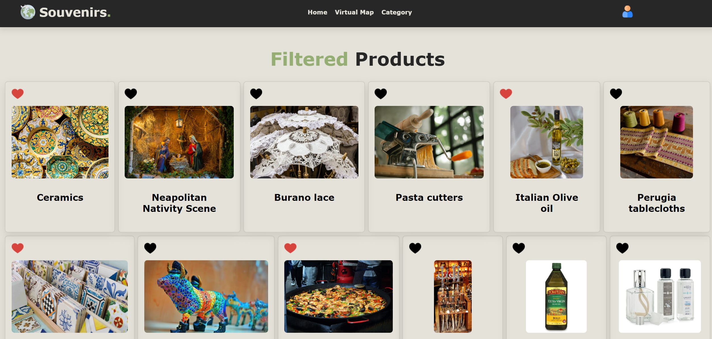
- Pagina Virtual Map
-
- Pagina oferă o hartă "virtuală" în cazul în care clientul dorește să acceseze mai ușor toată lista de suveniruri dintr-o țară anume.
- 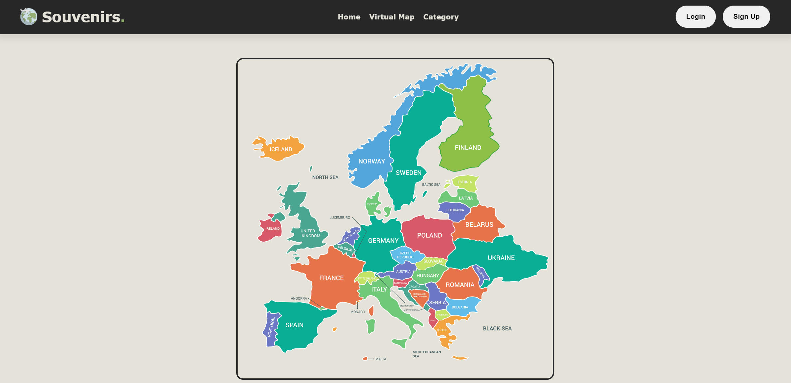
- Acesta trebuie doar să dea click pe țara respectivă și va fi redirecționat către pagina Category, pe ramura în care se află suvenirurile respective.
- Pagina Category
-
- Pagina conține toate suvenirurile din fiecare țară, separate corespunzător. Există și un cuprins pentru a naviga mai rapid .
- 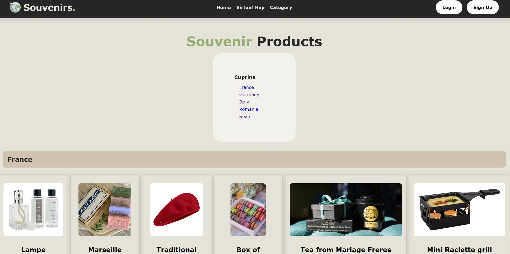
- În cazul în care clientul este autentificat/înregistrat acesta va avea acces să adauge anumite suveniruri în pagina de preferințe (pagina Favorite Souvenirs).
- 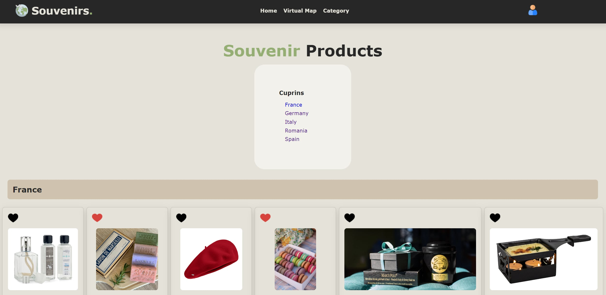
- Pentru vizualizarea mai delatiată a suvenirului, utilizatorul poate apăsa pe acesta și va fi directionat către o pagină destinată suvenirului respectiv:
- 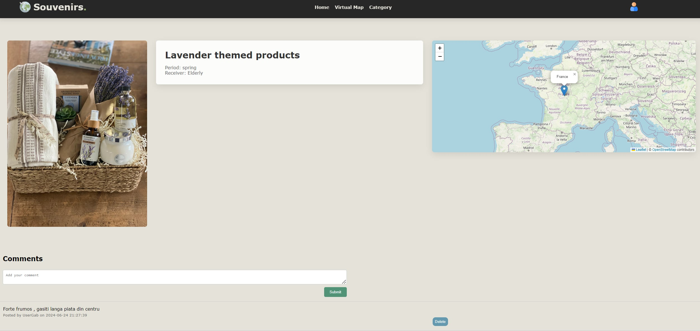
- Aici acesta poate vedea informații despre produs, cum ar fi: poza, numele, categoriile din care face parte și o mapa care arata locatia de unde provine acesta.
- Utilizatorii autentificati pot vedea recenziile lasate de alti utilizatori referitoare la produsul respectiv și poate la rândul lui să scrie o recenzie. Are opțiunea sa o și steargă.
- Pagina Favorite Souvenirs
-
- Pagina conține toate suvenirurile la care clientul autentificat/înregistrat a dat inimioară
- În cazul în care nu mai doreste să aibă un anumit suvenir în lista de preferințe, va putea să-l șteargă.
- 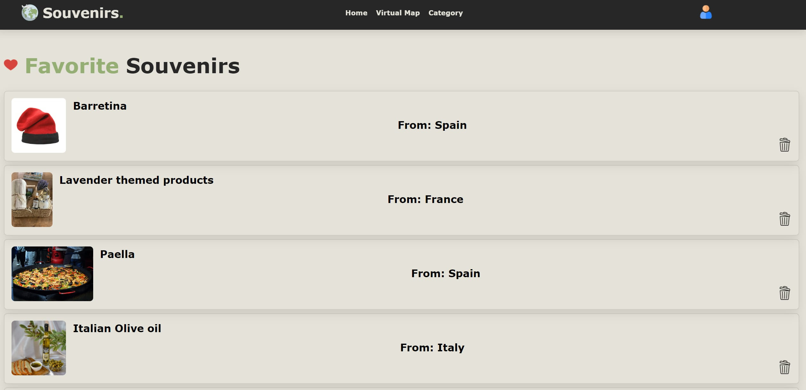
- Pagina de profil
-
- Pagina prezintă informații despre utilizator. 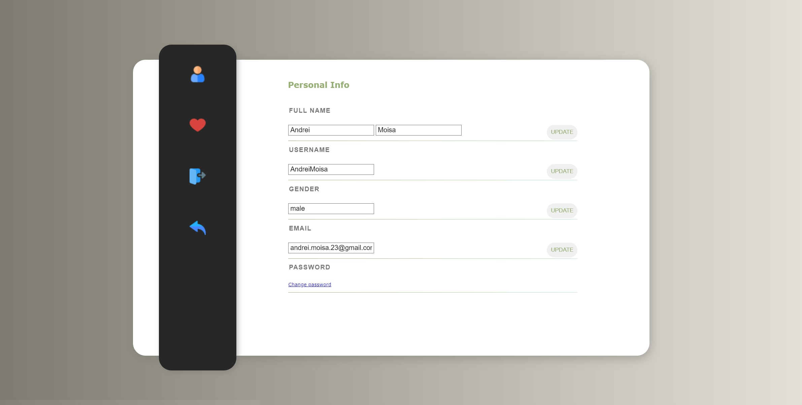
- Utilizatorul autentificat își va vedea la profil detalii despre cont.
- Acesta va putea să dea update la username, email și va putea să-și modifice parola
- Utilizatorul va avea la dispoziție un buton inimioară pentru a fi direcționat către pagina cu suvenirurile preferate, un buton logout și un buton undo pentru a se întoarce către pagina Home.
- Pentru a-și schimba parola va apasa pe 'Change password' și va fi direcționat către pagina de schimbare a parolei: 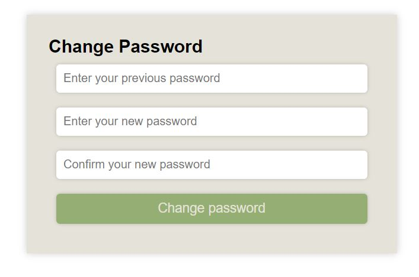
- Aici, pentru siguranță, este obligat sa scrie parola veche pentru o putea schimba cu cea nouă.
3.2 Interfața Adminului
Mai jos, puteți vedea o prezentare generală a paginilor la care doar adminul are acces și funcționalitățile pe care aceste pagini le oferă:
- Pagina acesta este destinată doar adminilor deoarece doar ei au permsiunea de a adăuga, edita sau șterge un suvenir. 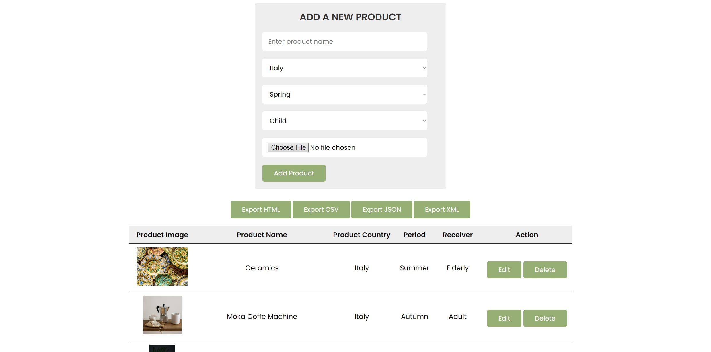
- Formularul de adăugare a unui nou suvenir: aici adminul poate adăuga un nou suvenir, dându-i un nume, o poză si selectând țara din care face parte, anotimpul pentru care acesta este cel mai potrivit și categoria de vârstă pentru care acesta este recomandat.
- Adminul, prin apasarea unuia dintre cele 4 butoane de sub formularul de "Add a new product", poate exporta lista suvenirurilor in urmatoarele formate: HTML, CSV, JSON și XML.
- În dreptul fiecarui suvenir există doua butoane de actiune:
- Edit: prin apăsarea acestui buton, adminul este directionat către o pagină Admin Update.
- Delete: prin apăsarea acestui buton, adminul poate șterge suvenirul respectiv.
- În această pagină adminii pot edita informațiile despre un produs. 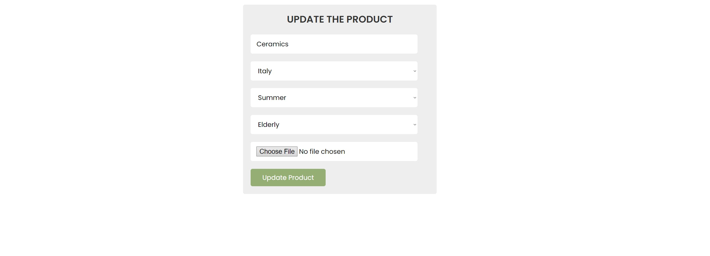
- Formularul de editare a unui suvenir existent: aici adminul poate edita un suvenir care deja există, dându-i un nou nume, o nouă poză sau o nouă țara de origine, anotimp sau categorie de vârstă.
3.3 Interfața Hardware
Nu sunt necesare interfețe hardware specifice; funcționează pe orice platformă cu un browser web.
3.4 Interfața Software
Cerințe minime:
- browser compatibil HTML5.
- Postgres Database: baza de date pentru stocarea informațiilor utilizatorilor și suvenirurilor.
3.5 Interfața de comunicare
Aplicația necesită o conexiune la internet. Standardul de comunicare care va fi utilizat este HTTP.
4. Caracteristici ale sistemului
4.1 Gestionarea contului
4.1.1 Descriere și generalități
Utilizatorii pot înregistra un cont pe platforma Souvenirs selectând un nume de utilizator unic, un email valid si o parolă sigură. Autentificarea se realizează cu numele de utilizator și parola asociată contului.4.1.2 Actualizarea informațiilor
- Atunci când un utilizator înregistrează un cont nou, informațiile acestuia sunt stocate în baza de date. Utilizatorii au posibilitatea să își actualizeze informațiile personale și credențialele în orice moment, iar noile valori sunt reflectate în baza de date.
4.1.3 Condiții de funcționare
- Pentru a modifica informațiile contului, utilizatorul trebuie să fie autentificat pe platformă.
- Autentificarea este posibilă numai pentru conturile existente în baza de date a aplicației.
4.2 Secțiunea Admin
4.2.1 Descriere și generalități
Secțiunea Administrativă este destinată utilizatorilor cu privilegii de administrator și oferă funcționalități avansate care nu sunt disponibile pentru utilizatorii obișnuiți ai aplicației Souvenirs. Atunci când un administrator accesează panoul de control, acesta are capacitatea de a adăuga, modifica sau șterge suveniruri direct de pe platformă. De asemenea, este capabil să exporte lista de suveniruri în formatele: HTML, CSV, JSON, XML.4.2.2 Actualizare informațiilor
- Atunci când un administrator adaugă sau modifică un suvenir, informațiile asociate acestuia sunt actualizate în baza de date a aplicației Souvenirs.
4.2.3 Condiții de funcționare
- Pentru a accesa secțiunea Administrativă, utilizatorul trebuie să fie autentificat pe platforma Souvenirs.
- Utilizatorul trebuie să dețină privilegii de administrator pentru a putea gestiona informațiile despre suvenirurile din sistem.
4.3 Secțiunea de Autentificare și Deconectare
4.3.1 Autentificare (Login)
4.3.1.1 Descriere și Generalități
Secțiunea de Autentificare permite utilizatorilor să își acceseze conturile prin furnizarea numelui de utilizator și a parolei asociate. După autentificare, utilizatorul este redirecționat către pagina principală a aplicației Souvenirs.4.3.1.2 Actualizare Informații
- În momentul autentificării, serverul validează credențialele utilizatorului și generează un cookie pentru a menține sesiunea activă. Acesta este utilizat pentru autentificare și autorizare în cererile ulterioare către server.
4.3.1.3 Condiții de Funcționare
- Pentru a accesa secțiunea de Autentificare, utilizatorul trebuie să nu fie deja autentificat.
- Utilizatorul trebuie să furnizeze un nume de utilizator și o parolă, iar ambele trebuie să fie valide pentru a se autentifica.
4.3.2 Deconectare (Logout)
4.3.2.1 Descriere și Generalități
Secțiunea de Deconectare permite utilizatorilor să se deconecteze de pe contul lor. După deconectare, utilizatorul este redirecționat către pagina principală a aplicației Souvenirs.4.3.2.2 Actualizare Informații
- La deconectare, cookie-ul asociat sesiunii curente este eliminat.
4.3.2.3 Condiții de Funcționare
- Utilizatorul trebuie să fie autentificat pentru a putea accesa secțiunea de Deconectare.
- Utilizatorul trebuie să aibă posibilitatea de a efectua deconectarea de pe contul său.
4.4 Pagina Profilului Utilizatorului
4.4.1 Descriere și Generalități
Pagina Profilului Utilizatorului oferă utilizatorilor posibilitatea de a vizualiza și gestiona informațiile personale asociate contului lor. Aici, utilizatorii pot vedea și actualiza numele, prenumele, numele de utilizator, genul, adresa de email și parola asociate contului lor. De asemenea, pe această pagină se găsesc și butoane pentru deconectare (Logout) și pentru a accesa pagina de Suveniruri Preferate.4.4.2 Actualizarea informațiilor
4.4.2.1 Vizualizarea Informațiilor Personale
- Utilizatorul poate vizualiza numele, prenumele, numele de utilizator, genul și adresa de email asociate contului său pe pagina Profilului Utilizatorului.
4.4.2.2 Actualizarea Informațiilor Personale
- Utilizatorul poate actualiza numele, prenumele, numele de utilizator, genul și adresa de email asociate contului său. Actualizarea informațiilor se face prin completarea și trimiterea unui formular de actualizare.
4.4.2.3 Schimbarea Parolei
- Utilizatorul poate schimba parola contului său prin completarea și trimiterea unui formular de schimbare a parolei. Pentru a schimba parola, utilizatorul trebuie să introducă parola veche și parola nouă.
4.4.3 Cerințe de funcționare
4.4.3.1 Autentificare
- Utilizatorul trebuie să fie autentificat pentru a putea accesa pagina Profilului Utilizatorului.
4.4.3.2 Acces la Propriul Profil
- Utilizatorul poate accesa doar propriul profil și nu are permisiunea de a vizualiza sau actualiza profilurile altor utilizatori.
4.4.3.3 Deconectare
- Utilizatorul are opțiunea de a se deconecta de pe contul său direct de pe pagina Profilului Utilizatorului.
5. Funcționalități pentru protecție și securitate
Securitatea și protecția datelor utilizatorilor reprezintă priorități esențiale pentru aplicația SoRe. Aceste funcționalități sunt implementate pentru a asigura integritatea și confidențialitatea datelor.
5.1 Protecția datelor
Protecția datelor utilizatorilor este realizată prin criptarea puternică a datelor sensibile. Parolele utilizatorilor sunt criptate folosind algoritmul bcrypt, care asigură un nivel ridicat de securitate prin generarea de hash-uri complexe și greu de spart. Acest algoritm este ales pentru rezistența sa la atacuri de tip brute-force și pentru capacitatea de a include un salt unic pentru fiecare parolă, sporind astfel securitatea generală.Protecția datelor utilizatorilor este realizată prin criptarea puternică a datelor sensibile. Parolele utilizatorilor sunt criptate folosind algoritmul bcrypt, care asigură un nivel ridicat de securitate prin generarea de hash-uri complexe și greu de spart. Acest algoritm este ales pentru rezistența sa la atacuri de tip brute-force și pentru capacitatea de a include un salt unic pentru fiecare parolă, sporind astfel securitatea generală.
5.2 Securizarea datelor
Securizarea datelor este realizată prin mai multe măsuri și mecanisme de protecție:
- Autorizare utilizatori: Toate cererile efectuate de utilizatori sunt validate și autorizate prin utilizarea cookie-urilor HTTP-only. Aceste cookie-uri sunt utilizate pentru a menține sesiunea utilizatorilor, asigurând că doar utilizatorii autentificați pot accesa anumite funcționalități.
- Prevenirea atacurilor SQL Injection: Pentru a preveni atacurile de tip SQL Injection, toate interogările la baza de date sunt realizate folosind prepared statements. Acest mecanism permite separarea codului SQL de datele introduse de utilizatori, minimizând riscul injectării de cod malițios.
5.3 Calitățile Software
Aplicația SoRe este proiectată pentru a oferi o experiență de utilizare plăcută și sigură, având în vedere următoarele calități software:
- Ușurință în utilizare: Interfața utilizatorului este intuitivă și ușor de navigat, permițând utilizatorilor să acceseze rapid și eficient funcționalitățile aplicației.
- Adaptabilitate: Aplicația oferă o experiență coerentă pe toate dispozitivele, fiind complet responsivă și adaptabilă la diferite rezoluții și dimensiuni ale ecranelor.
- Flexibilitate: Utilizatorii au posibilitatea de a-și personaliza experiența în funcție de preferințe, având acces la funcționalități personalizate și opțiuni de configurare.
6. Structura aplicației
Aplicația SoRe este structurată pe două componente principale: frontend și backend, fiecare având roluri și responsabilități bine definite.
6.1 Frontend
Frontend-ul aplicației este realizat folosind HTML și CSS (SASS), asigurând o interfață atractivă și interactivă. Componentele principale ale frontend-ului includ:
- Pagini publice: SignUp, Login, Home, Virtual Map, Category, About Us, Help, Product Detail. Aceste pagini sunt accesibile tuturor utilizatorilor, indiferent dacă sunt autentificați sau nu.
- Pagini protejate: Profil, Favorite Souvenirs. Aceste pagini sunt accesibile doar utilizatorilor autentificați, asigurând protecția datelor personale și a preferințelor utilizatorilor.
6.2 Backend
Backend-ul aplicației este realizat în PHP și urmează structura MVC (Model-View-Controller). Această structură asigură o separare clară a logicii de afaceri, a interfeței utilizatorului și a manipulării datelor. Componentele backend-ului includ:
- Model: Gestionarea logicii de acces la baza de date și manipularea datelor. Modelele definesc structura datelor și metodele de interacțiune cu baza de date.
- View: Generarea interfeței utilizatorului. View-ul se ocupă de afișarea datelor și a interfețelor cu care interacționează utilizatorii.
- Controller: Gestionarea cererilor utilizatorului și actualizarea modelelor. Controlerele intermediază comunicarea între modele și view-uri, asigurând funcționalitatea corectă a aplicației.
6.3 Baza de date
Aplicația utilizează MySQL, disponibilă prin XAMPP, pentru gestionarea datelor utilizatorilor și suvenirurilor. Structura bazei de date include tabele pentru:
- Utilizatori: Informații despre id-ul utilizatorului, numele de utilizator, adresa de email, parola encrypted și rolul lui (USER/ADMIN).
- Profilui: Informații despre id-ul profilului și id-ul utilizatorului. Această tabelă stochează datele personale ale utilizatorilor, inclusiv numele, prenumele, numele de utilizator, adresa de email si genul acestuia (feminin/masculin).
- Suveniruri: Informații despre id-ul și numele acestuia. Această tabelă stochează datele despre țara de proveniență, anotimpul potrivit acestuia și categoria de vârstă careia i se potrivește, cât și o imagine cu suvenirul.
- Suveniruri favorite: Această tabelă face legătura între tabela userilor și cea a suvenirurilor. Astfel aici găsim informații despre id utilizatorului și produsului.
- Recenzii: Aici găsim informații despre id-ul recenziei, id-ul produsului la care s-a facut recenzia, id-ul utilizatorului care a scris-o, textul acesteia și data și ora la care recenzia a fost creată.
- Password reset: Aici găsim informații despre id-ul token-ului, id-ul utilizatorului care a uitat parola, token-ul și timpul de supraviețuire al acestuia.
6.4 Server web
Serverul web utilizat este localhost, oferit de XAMPP. XAMPP furnizează un mediu de dezvoltare complet, care include Apache, MySQL, PHP și Perl, permițând dezvoltatorilor să testeze și să ruleze aplicația local.
7. Echipa
- Bălan Gabriela
- Moisă Andrei
- Cerințele proiectului au necesitat contributie egală atât la frontend cât și la backend. Am comunicat constant și ne-am sincronizat progresul cu ajutorul repo-ului github.
- https://github.com/MAndrei2308/Web2024